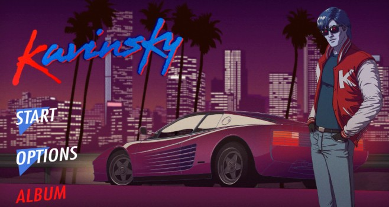
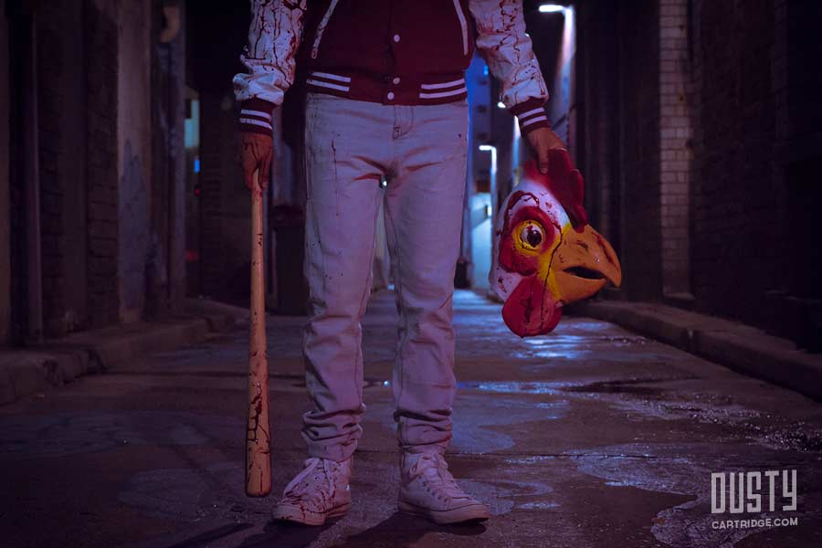

Источник https://y-blaz.livejournal.com/42100.html
Кровь, неон и синтипоп
Про Synthwave, поп-культурную волну поднятую молчаливым шофером-аутистом
Пересмотрел уже отсмотренный в прошлом месяце художественный фильм «Гость»... его восхитительный синти-поп саундтрек в стиле восьмидесятых, успел уже заслушать до дыр, как и саундрек к отличному ужастику «It Follows».., плюс еще и дебютный альбом Джона Карпентера «Lost Themes»…
В общем, насмотревшись и наслушавшись подобного, сижу, и понимаю, что терпеть больше нельзя.., нужно срочно делать большой пост обо всей этой набирающей популярность Synthwave или New Retro Wave эстетике в кино и масс культуре.
Планку слегка сорвало, и в припадке графомании настрочил не пост, а целый какой-то... не знаю… реферат, из трех частей, про музыку, игры и кино.
Под катом много видео картинок и текста (не уверен, что кто-то будет все это читать, но посмотреть советую)
Начать пост следует… с начала, с Каннского кинофестиваля 2011-го года.
Именно там четыре года назад, 20 мая, зрители пришли на премьеру нового фильма датчанина по фамилии Рефн. В зале погас свет и на экране появились бесконечно прекрасные ядовито-розовые вступительные титры… Спустя полтора часа, зазвучала приторно-меланхоличная «А Real Hero», и поплыли все такие же прекрасные и все такие же розовые финальные титры. Так синти-поп волна началась.
Нет, понятно, что никакого велосипеда Рефн со своим «Драйвом» не изобретал, и вся эта эстетика и так уже давно витала в воздухе. Во Франции вовсю творили David Grellier и Kavinsky, в социальных сетях кипела жизнь в тематических пабликах, то тут, то там элементы стиля проскакивали в кино, включая более ранние работы все того же Рефна.
Но ведь действительно этапные, культовые фильмы, оказавшие настоящее влияние на масс культуру из ниоткуда и не появляются. Практически все подобные картины, от «Беспечного ездока», до «Матрицы» как раз и ценны не из-за какой-то своей «оригинальности», а тем, что создатели умудрились нащупать и увидеть и без того уже витающие в воздухе бестелесные эстетику и идеи, крепко схватить их за яйца, и запихнуть все это в цельное, законченное произведение. Именно такое кино и становится в итоге хрестоматийной иконой какого-либо стиля. Поэтому, думаю, вся эта сегодняшняя синтипоперская волна по-настоящему обрела свой хребет и лицо, именно 20 мая 2011-го года, в день премьеры «Драйва».
Стоит разобраться с терминологией, и понять что оно вообще такое этот ваш Synthwave. Поможет нам англоязычная Вики, минимальные познания языка и гугл-транслейт. Synthwave, это музыкальный стиль, появившийся в середине 2000-х , под влиянием саундтреков к фильмам, играм и TV шоу 1980-х годов.
Эстетически течение опирается на восмидесятнический ретро футуризм, и стилистку хорроров, боевиков, и фантастики того времени. Значительное влияние на стиль оказало творчество Джона Карпентера.
Вся суть и атмосфера Synthwave жанра - в одном видео.
Retrowave from Florian Renner on Vimeo.
Смотреть лучше на примерах. А едва ли не идеальный пример стиля, это вне всяких сомнений – Kavinsky.
Кавинский, это: лирический герой / вымышленный персонаж / сценический образ… созданный талантливым французским ди-джеем Венсаном Белорже.
В общем, творит месье Белорже в образе Кавински – молодого американского парня погибшего в 1986 году в автокатастрофе, разбившись на своем красном Ferrari Testarossa, но восставшем из мертвых, чтобы творить крутую электронную музыку…
Ну и пока говорим о музыке, нельзя не упомянуть патриарха и отца жанра - Джона Карпентера. Ведь Карпентер не только талантливый режиссер, создавший со своим «Хелоуином» новый киножанр – слешер, но и самобытный музыкант, написавший саудтреки к большинству своих фильмов, из которых в итоге вырос еще и новый музыкальный жанр – Карпентеркор.
Будучи одним из пионеров синтезаторной музыки, Карпентер писал наполненные неповторимой мрачностью и стильностью мелодии, безвозвратно загубившие психику целому поколению выросших на малобюджетной фантастике и триллерах музыкантов. Сегодня Сarpentercore в тренде, тучи ди-джеев, начинающих групп, и прочих музыкантов, лабают по сути новые и новые саудтреки к своим любимым фильмам из 80-х… этакие валентинки старику Джону.
И вот, не далее чем несколько месяцев назад, сам живой классик Джон Карпентер, давно отошедший от съемок фильмов, выдал свой дебютный музыкальный альбом отборного карпентеркора.
Называется альбом Lost Themes, и является как бы саундтреками к несуществующим фильмам , которые мог бы снять Карпентер в 80-х. В альбоме прекрасно практически все, кроме одного нюанса, фильмы то где!?, к саундтрекам хочется что бы и фильмы прилагались! )
Вообще, если лезть в терминологические дебри, то выяснится что в рамках этой синтиволны на нас хлынул целый поток разных музыкальных жанров: horror synth, giallo disco, sci-fi wave, abstract, minimal wave, techno, carpentercore, electro, retro synth, progressive electronic, vhs-wave… это неполный список.
Если лезть в терминологические дебри, то выяснится что в рамках этой синтиволны на нас хлынул целый поток разных музыкальных жанров: horror synth, giallo disco, sci-fi wave, abstract, minimal wave, techno, carpentercore, electro, retro synth, progressive electronic, vhs-wave… это неполный список.
Там есть масса колоритных персонажей, например, Perturbator. Вот что пишут:
Легенда гласит, что Джеймс Кент, скрывающийся за выразительным псевдонимом Нарушитель — наполовину человек, наполовину синтезатор. Он возглавляет новую волну ретро-футуристической музыки, вдохновлённой киберпанком 80-х, вместе с Danger, Lazehawk и Kavinsky, но в отличие от коллег издаётся на метал лейбле Blood Music, оправдывая такой выбор своим сокрушительным, непроницаемо мрачным, демоническим звучанием.
Современная поп-культура стоит ровно на трех китах: Кино, Музыка, Видеоигры, и восьмидесятническая синти-волна накрыла их всех.
Второе дыхание, обрела и без того уже классическая GTA: Vice City. Игру перевыпустили на Android, и вся накрытая рентро-синти-вейвом публика снова получила возможность окунутся в наполненную неоном, черным юмором, и насилием безумную атмосферу Маями 80-х годов.
Рассказывать подробно про Vice City, наверное, не стоит, все мы его и так помним и любим.
Свою игру для Android выдал и упомянутый выше Kavinsky. Получился стильный 16-ти битный файтинг и гонки, под отличный авторский саундтрек. Главный герой игры Kavinsky, как не трудно догадатся – Kavinsky.
Игра до невозможности олдскульна. Тут и орды панков которым нужно надрать задницы, тут и финальные боссы, тут и гонки… Но при всем при этом, мне игровой процесс показался очень уж однотипным, и несмотря на прекрастный саунд, довольно быстро и безжалостно ее удалил.
Но главные шедевры, которые нам принесло синти-ретро-вейвом, это вне всяких сомнений, созданные двумя скандинавскими разработчиками независимые индии-игры, в жанре Top-Down action – Hotline Miami и Hotline Miami 2 wrong number.
Кстати, по-моему, любопытный нюанс, при том что идейно, эстетически и сюжетно весь этот сегодняшний Synthwave тренд вырос из, и опирается на американскую поп-культуру восьмидесятых, активнее всего в этой стилистике сейчас трудятся и продвигают ее – европейцы. Большинство «локомотивов» течения родом либо из Скандинавии, либо из Франции…
Но вернемся к Hotline Miami. Главный герой, имя которого ни разу не звучит.., это, кстати, привет «Драйву», создатели игры не скрывают, что вдохновил их именно фильм Рефна, отдельная благодарность режиссеру указана в титрах, а внутри самой игры присутствуют отсылающие к картине пасхалки, вроде куртки со скропионом которую можно увидеть лежащей на некоторых уровнях...
Главный герой, которого фанаты назвали Куртка, из-за его стильного бомбера живет в Майями 80-х, и получает странные, завуалированные сообщения на автоответчик, вроде доставить пиццу по такому-то адресу, или забрать ковры по другому. После садится в свой DeLorean, мчится по адресу, одевает какую-нибудь маску животного, и устраивает тотальный геноцид всех находящихся в помещении персон… пиксельные лужи крови и простреленные из дробовика черепа, разнузданное, запредельно дикое восьмибитное ультранасилие…
Помимо Рефна, на создателей серьезно повлияло творчество Линча, отсюда психоделичная атмосфера происходящего и безумный допускающий множество трактовок и теорий сюжет.
И все это снабжено просто гипнотическим саудреком, и выдержано в неоновой синти-эстетке.
Описывать детали геймплея наверное не буду, тут журнал про другое.
Игра, повторюсь, стала культовой. Соответственно вокруг нее уже выросла целая небольшая фанатская индустрия. Вот тут можно посмотреть разное клеевое барахло в стилистике игры , но меня куда больше интересуют фанатские фильмы и трейлеры игры. Если забьете на Ютюбе Hotline Miami, поиск выдаст целую тучу стильных синтепоперских роликов, с неоново розовым ултранасилием, и мощным саундом.
Резюмируя; если в музыкальной индустрии один из самых наглядных примеров Synthwave эстетики это Kavinsky, то в игровой это однозначно Hotline Miami.
История о некоем демоне (?) преследователе, передающимся половым путем.
После секса на заднем сидении авто, парень связывает девятнадцатилетнюю Джей и торопливо объясняет, что только что передал ей некое жуткое проклятье, которое в свое время подцепил так же, и теперь за Джей всюду будет следовать принимающее разные формы неторопливое нечто. И единственный способ от него избавится - передать проклятье следующему «счастливчику».
Конечно к синтивейву этот фильм можно отнести с натяжкой, тут скорее добротный провинциальный нео-нуар, но все-таки время действия 80-е, а саудтрек – карпентеркор.
В главной роли добропорядочного семьянина вынужденного взяться за оружие - Майкл С. Холл (который Декстер), в двух второстепенных ролях, два мощнейших старика: Сэм Шепард и Дон Джонсон.
Сюжет, а вслед за ним и жанр фильма делают на протяжении двух часов несколько кардинальных поворотов, начинаясь как криминальная драма про «обывателя в опасности», фильм превращается в триллер о преследовании, после в нуарный детектив с нечистыми на руку копами, и заканчивается как убойный боевик со снафф-порно и семейной драмой…
В один прекрасный день на пороге дома семьи Питерсонов, чей старший сын погиб в Афганистане, появляется обаятельный молодой человек Дэвид, представившийся другом и однополчанином их погибшего сына. Дэвиду любезно предлагают погостить, и он так же любезно поотнекивавшись соглашается…
Гость помогает отцу семейства продвинутся по службе… и пить пиво, матери помогает пережить потерю старшего сына… и по дому, младшему, с хулиганами разобраться… а девятнадцатилетней дочери… тут все сложно. В общем Девид становится просто незаменимым членом семьи, и все бы хорошо, вот только в округе начала расти смертность.